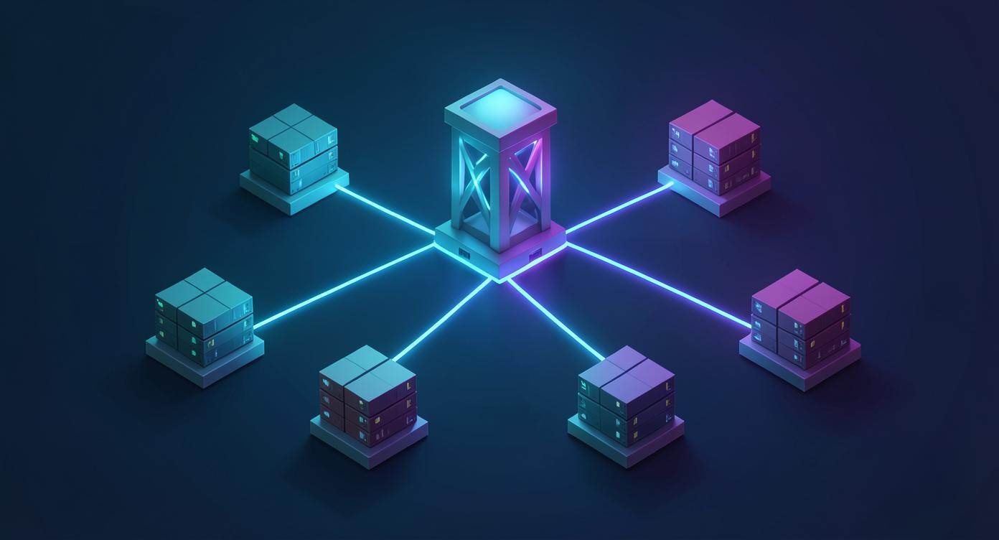
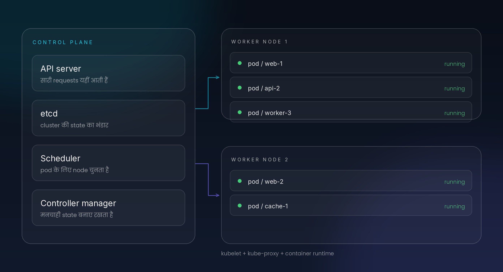
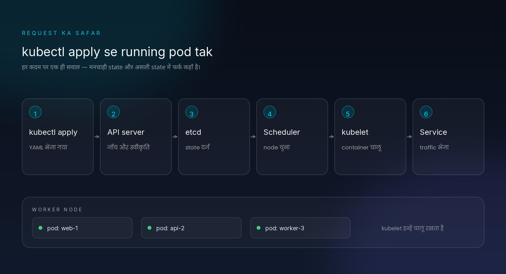

Kubernetes Architecture Explained: Control Plane, Nodes aur Pods

Kubernetes सीखते समय सबसे पहली दिक्कत यह आती है कि शब्द बहुत हैं — cluster, node, pod, deployment, service, ingress — और हर ट्यूटोरियल मान लेता है कि आपको पता है कि ये एक-दूसरे से कैसे जुड़े हैं। जब तक यह नक्शा साफ न हो, कमांड याद होने से भी काम नहीं चलता।
इस आर्टिकल में मैं Kubernetes की architecture को ऊपर से नीचे खोलूँगा — control plane के चार components क्या करते हैं, worker node पर क्या चलता है, pod और deployment में क्या फर्क है, एक kubectl apply से pod चालू होने तक क्या-क्या होता है, networking की बुनियादी बातें, और production में कौन सी चीज़ें ज़रूरी हैं। कोड की जगह समझ पर ज़ोर रहेगा, क्योंकि commands तो बदलते रहते हैं।
छोटा जवाब: Kubernetes एक container orchestration platform है। इसका दो हिस्सा है — control plane, जो फैसले लेता है, और worker nodes, जो containers चलाते हैं। आप YAML में मनचाही state लिखते हैं; control plane उसे etcd में रखता है और controllers मिलाकर असली state वैसी बनाते रहते हैं।
Kubernetes kya hai, ek line me
Kubernetes का काम इतना सीधा है कि इसे एक वाक्य में कहा जा सकता है — आप बताते हैं कि क्या चलना चाहिए, और Kubernetes उसे चलाए रखता है। अगर कोई container बंद हो जाए, तो नया शुरू हो जाता है। अगर load बढ़े, तो संख्या बढ़ जाती है। अगर node खराब हो, तो काम दूसरी जगह चला दिया जाता है।
इस सोच को declarative कहते हैं। पुराने तरीके में आप लिखते थे "यह service शुरू करो", और फिर उसे ज़िंदा रखना आपका काम था। यहाँ आप लिखते हैं "तीन replicas हमेशा चलते रहें" — और यह सुनिश्चित करना platform का काम है।
Cluster का मतलब क्या है
Cluster का मतलब है control plane और कई worker nodes का एक समूह, जो मिलकर एक ही तरह का काम संभालता है। आप बतौर developer cluster के अंदर नहीं जाते — आप API के ज़रिए request भेजते हैं और cluster अपने अंदर तय करता है कि काम कहाँ चलेगा। यही अलगाव इसे scalable बनाता है।
Architecture ke do hisse
पहला हिस्सा control plane है — cluster का दिमाग। इसमें API server, etcd, scheduler और controller manager आते हैं। दूसरा हिस्सा worker nodes हैं — मांसपेशियाँ, जहाँ containers असल में चलते हैं। हर node पर kubelet, kube-proxy और एक container runtime होता है।
यह बँटवारा सिर्फ सैद्धांतिक नहीं है। इसका सीधा फायदा यह है कि control plane छोटा और स्थिर रह सकता है, जबकि nodes की संख्या ज़रूरत के हिसाब से बढ़ती-घटती रहती है। जब आप सुनते हैं कि "cluster upgrade", तो इसका मतलब control plane और nodes के versions को क्रम से बदलना होता है।

Control plane ke 4 components
ये चारों मिलकर cluster की "सोच" बनाते हैं। इनमें से किसी एक का बंद होना cluster के व्यवहार को बदल देता है।
API server — सबका दरवाज़ा
हर request, चाहे वह kubectl से आए, कोई dashboard हो, या कोई internal controller, API server से ही गुज़रती है। यह request की जाँच करता है, authentication और authorization देखता है, और फिर state को etcd में लिखवाता है। इसे cluster का front door मानें।
यही वजह है कि जब cluster "hang" जैसा लगता है, तो पहली जाँच API server की होती है। अगर वह जवाब नहीं दे रहा, तो बाकी सब बेकार है — चाहे pods चल रहे हों।
etcd — cluster की याददाश्त
etcd एक key-value store है जिसमें cluster की पूरी state रहती है — कौन से objects हैं, उनकी settings क्या हैं, कौन सा node किस हाल में है। यह Kubernetes का सबसे संवेदनशील हिस्सा है, क्योंकि इसे खोना cluster की याद खोने जैसा है।
इसीलिए production में etcd का backup नियमित लिया जाता है, और उसे अलग disk पर रखा जाता है। यह वह चीज़ है जिसे "बाद में देख लेंगे" नहीं कहना चाहिए।
Scheduler — काम किस node पर जाए
जब कोई नया pod बनता है और उसे किसी node पर चलना होता है, तो scheduler तय करता है कि कौन सा node सही है। यह खाली जगह, CPU और memory की माँग, affinity के नियम, और तमाम constraints देखता है।
अगर सcheduler को कोई उपयुक्त node नहीं मिलता, तो pod "Pending" रहता है। यह अक्सर resource की कमी का संकेत होता है, न कि कोड की गलती का — इसलिए पहले describe करके कारण देखें।
Controller manager — मनचाही state बनाए रखना
Controllers छोटे-छोटे loops की तरह होते हैं, जो असली state को मनचाही state से मिलाते रहते हैं। Deployment controller तय करता है कि सही संख्या में replicas चलें, node controller देखता है कि कोई node जवाब न दे तो क्या हो, और job controller एक बार वाला काम पूरा कराता है।
यही वह हिस्सा है जो Kubernetes को "self-healing" बनाता है। कोई जादू नहीं होता — बस हर कुछ सेकंड में एक loop चलता है और फर्क दिखे तो सुधार करता है।
Worker node ke 3 components
kubelet — node का प्रबंधक
kubelet हर node पर चलता है और API server से बात करता है। उसे बताया जाता है कि इस node पर कौन से pods चलने चाहिए; वह उन्हें container runtime के ज़रिए चालू करता है और उनकी हालत वापस भेजता रहता है। अगर pod बंद हो जाए, तो वह नया बनाने की कोशिश करता है।
kube-proxy — network का नियम
kube-proxy node पर network rules बनाता है, ताकि service का traffic सही pod तक पहुँचे। जब आप किसी service को call करते हैं, तो असल में यही नियम तय करते हैं कि request किस pod तक जाएगी।
Container runtime
यह वह software है जो container असल में चलाता है — जैसे containerd या CRI-O। Kubernetes खुद container नहीं चलाता; वह runtime को निर्देश देता है। इसलिए runtime का ठीक होना उतना ही ज़रूरी है जितना cluster का।
Object model: कौन क्या है
Kubernetes में सब कुछ object है, और हर object का एक काम है। यह तालिका शुरुआत में सबसे ज़्यादा काम आती है।
| Object | काम | आम गलतफहमी |
|---|---|---|
| Pod | एक या अधिक containers का सबसे छोटा समूह | इसे सीधे बनाना production में ठीक नहीं |
| ReplicaSet | pod की गिनती बनाए रखना | इसे हाथ से manage नहीं करते |
| Deployment | rollout, rollback और replicas का प्रबंधन | यह pod नहीं है, यह निर्देश है |
| Service | pods तक स्थिर network पहुँच | Pod का IP बदलता रहता है, service का नहीं |
| Ingress | बाहर से आने वाले HTTP traffic का रास्ता | इसे चलाने के लिए controller चाहिए |
| ConfigMap / Secret | settings और संवेदनशील मान | Secret encrypted नहीं होता, सिर्फ अलग रखा जाता है |
| Namespace | एक cluster के अंदर तार्किक बँटवारा | यह security की सीमा नहीं है |
सबसे ज़रूरी बात — Deployment बनाएँ, Pod नहीं। Pod अस्थायी है; उसका नाम और IP दोनों बदलते हैं। Deployment आपके लिए ReplicaSet बनाता है, और ReplicaSet pods बनाता है। इसी क्रम से rollout और rollback संभव होते हैं।
Ek apply ka safar
यह समझ लेने के बाद बहुत सी error messages अपने आप मतलब देने लगती हैं।
kubectlआपकी YAML फाइल API server को भेजता है।- API server जाँचता है कि आपको यह करने की अनुमति है और फाइल सही है।
- State etcd में दर्ज हो जाती है — अभी कोई container नहीं चला।
- Deployment controller ReplicaSet बनाता है, जो pod objects बनाता है।
- Scheduler हर नए pod के लिए उपयुक्त node चुनता है।
- उस node का kubelet image खींचता है, container चलाता है और हालत वापस भेजता है।
# एक छोटा deployment: तीन replicas, हर pod में एक container
apiVersion: apps/v1
kind: Deployment
metadata:
name: web
spec:
replicas: 3
selector:
matchLabels:
app: web
template:
metadata:
labels:
app: web
spec:
containers:
- name: web
image: nginx:stable
ports:
- containerPort: 80इस फाइल में सबसे ज़रूरी पंक्ति replicas: 3 है। इसका मतलब यह नहीं कि "तीन शुरू करो", बल्कि यह कि "हमेशा तीन चलते रहें"। अगर एक बंद हुआ, तो controller नया बनाएगा — यही declarative का असली फायदा है।

Networking ki buniyadi baat
Pod का IP अस्थायी होता है, इसलिए उसे सीधे call नहीं करना चाहिए। Service एक स्थिर नाम और IP देती है, और अपने पीछे के pods तक traffic पहुँचाती है।
- ClusterIP — सिर्फ cluster के अंदर पहुँच। सबसे आम और सुरक्षित विकल्प।
- NodePort — हर node के एक port पर service खोलता है। शुरुआती testing के लिए ठीक।
- LoadBalancer — cloud का load balancer बनाता है। सीधा और साफ, पर हर service का अपना खर्च।
- Ingress — एक ही entry point से कई services तक HTTP routing, domain और path के हिसाब से।
इनके नीचे CNI plugin काम करता है, जो pods के बीच network बनाता है। यहीं सबसे ज़्यादा cluster-विशिष्ट अंतर होते हैं, इसलिए managed service चुनते समय देखें कि वह कौन सा CNI इस्तेमाल करता है और क्या आपको network policy चाहिए होगी।
Production ke 6 checks
- Resource requests और limits। इनके बिना scheduler अंधेरे में फैसला करता है और एक pod पूरा node खा जाता है।
- Liveness और readiness probes। पहला बंद pod को दोबारा चालू करता है, दूसरा तब तक traffic नहीं भेजता जब तक app तैयार न हो।
- Horizontal Pod Autoscaler। load के हिसाब से replicas बढ़ाना, पर तभी जब metrics उपलब्ध हों।
- PodDisruptionBudget। node upgrade के समय एक साथ सारे pods बंद न हों।
- Logs और metrics। cluster के बाहर भेजें, वरना pod के साथ logs भी चले जाएँगे।
- Image tags और secrets।
latestकी जगह तय version रखें, और secrets को env में सीधे न लिखें।
इनमें पहला सबसे ज़्यादा नज़रअंदाज़ होता है। जब तक requests तय नहीं हैं, autoscaling और scheduling दोनों अनुमान पर चलते हैं — और अनुमान production में महंगा पड़ता है।
5 galtiyan jo sabse aam hain
पहली — सीधे pod बनाना और उसे production मान लेना। दूसरी — resource limits न रखना, फिर "cluster धीमा है" कहना। तीसरी — readiness probe न रखना, जिससे traffic ऐसे pod तक जाता है जो अभी तैयार नहीं। चौथी — etcd का backup न लेना। पाँचवीं — सब कुछ एक namespace में रखना, जिससे permissions और limits बेमतलब हो जाते हैं।
चौथी गलती का पता तब चलता है जब सबसे ज़्यादा ज़रूरत होती है। Managed Kubernetes में भी यह ज़िम्मेदारी कहीं न कहीं आपकी ही रहती है — सेवा provider hardware चलाता है, आपकी configuration और data की ज़िम्मेदारी नहीं उठाता।
मैंने इस architecture से क्या सीखा
सबसे बड़ी सीख यह रही कि Kubernetes की समस्या अक्सर cluster में नहीं, हमारी अपेक्षाओं में होती है। जब कोई pod "Pending" दिखता है, तो 90 प्रतिशत मामलों में कारण resource की कमी, गलत selector या node पर लगी restriction होती है — कोड की गलती नहीं।
दूसरी सीख — declarative होने का फायदा तभी मिलता है जब आप state को version control में रखें। जो टीम YAML git में रखती है, उसके लिए rollback एक command है; जो console से बदलाव करती है, उसके लिए वही काम घंटों का पहेली बन जाता है।
तीसरी सीख — छोटे cluster से शुरू करें। एक namespace, दो services, तीन checks। जो टीम पहले दिन से multi-cluster और service mesh में घुस जाती है, वह अक्सर basics पर ही अटक जाती है।
अक्सर पूछे जाने वाले सवाल
क्या Kubernetes सीखने से पहले Docker ज़रूरी है?
हाँ, कम से कम बुनियादी स्तर पर। Image, container और registry की समझ के बिना Kubernetes की error messages समझना मुश्किल होता है।
क्या छोटे project के लिए Kubernetes ज़रूरी है?
नहीं। एक-दो services और कम load वाले project के लिए साधारण container hosting या managed platform सस्ता और आसान रहता है। Kubernetes तब समझदारी है जब scale, availability या अलग-अलग टीमों की ज़रूरत बने।
Pod और container में क्या फर्क है?
Container एक चलने वाली इकाई है। Pod उसका cover है, जिसमें एक या अधिक containers एक साथ चलते हैं और network तथा storage साझा करते हैं।
Control plane बंद हो जाए तो चल रहे pods बंद होते हैं?
नहीं। चल रहे pods चलते रहते हैं, पर नए बनाना, बदलाव करना और state देखना रुक जाता है। इसलिए control plane की availability अलग से महत्वपूर्ण है।
Managed Kubernetes में क्या हमारा काम कम हो जाता है?
हाँ, control plane का रखरखाव provider करता है। पर application की configuration, resource planning, security, backup और cost — ये सब आपके ही ज़िम्मे रहते हैं।
आगे क्या पढ़ें
अगर आप अपने platform को आगे बढ़ा रहे हैं, तो event-driven architecture वाला आर्टिकल बताता है कि services आपस में कैसे बात करें, और legacy modernization की गाइड यह तय करने में मदद करती है कि पुराने system को किस क्रम में cluster पर ले जाएँ। GPU वाले workloads के लिए private LLM setup की गाइड देखें।
आगे पढ़ें: आधिकारिक जानकारी Kubernetes components और cluster architecture के दस्तावेज़ों में है। Version और feature बदलते रहते हैं, इसलिए अपने cluster के version के हिसाब से दस्तावेज़ पढ़ें।